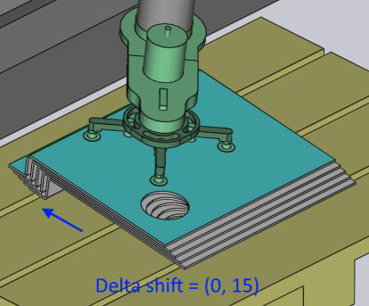

Panel Deposit

Panel Deposit zarządza podstawowymi ustawieniami umieszczania części na palecie, w koszu lub na przenośniku. Wybierz najbardziej odpowiedni typ wzorca dla danej części. Na przykład wzorzec Drop to Basket można użyć tylko wtedy, gdy używasz mechanicznego chwytaka z małą częścią.
Panel Deposit zawiera następujące karty i inne opcje:
-
Pozycja składowania (D1, D2,….,Dn)
-
Siatka powtarzań (R)
-
Sekwencja składowania (S)
Poniższy obraz pokazuje, jak karty składowania pojawiają się w bend navigator:

Karty Deposit D1 i D2
Dostępnych jest kilka wzorców składowania (Simple, Alternating, Weave, Basket itp.). Niektóre z tych wzorców (Alternating, Weave) używają części składowanych w dwóch różnych orientacjach. Orientacja i inne ustawienia dla tych części są edytowane na kartach D1 i opcjonalnie D2.
Użyj D1 i D2 do obsługi ustawień składowania części, aby upuszczać części na paletę składowania.
Rotate i Pitch
Opcje Rotate i Pitch kontrolują orientację części w punkcie upuszczenia. Ustawienie Rotate (znane również jako yaw) obraca część wokół lokalnego wektora nadgarstka, podczas gdy oś Pitch obraca część wokół osi Z maszyny.

Delta Shift
Opcja Delta Shift jest używana do przesuwania każdej kolejnej części w składzie względem części poniżej. Poniżej można zobaczyć przesunięcie o +15 mm w kierunku X, użyte do ścisłego układania części względem siebie w stabilny sposób.

Height
Parametr Height kontroluje wysokość nad stosem, z której część jest zwalniana (część spada o tę odległość, gdy spoczywa na stosie).
Dalej omówimy panel Deposit z następujących tematów:
Simulate
Sekwencję lub kolejność, w jakiej każda część jest umieszczana na palecie, można zobaczyć, używając opcji Simulate. Liczba warstw i siatka wykorzystywana do składowania określa, jaka ilość jest symulowana. Symulację składowania części można oglądać, przesuwając suwak symulacji tam i z powrotem.